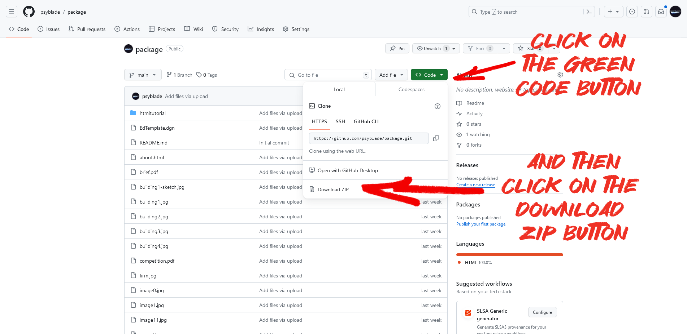
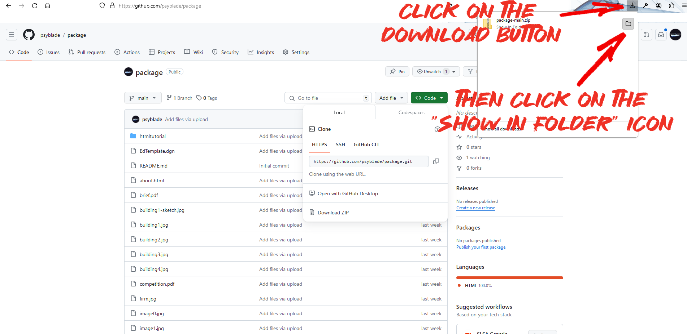
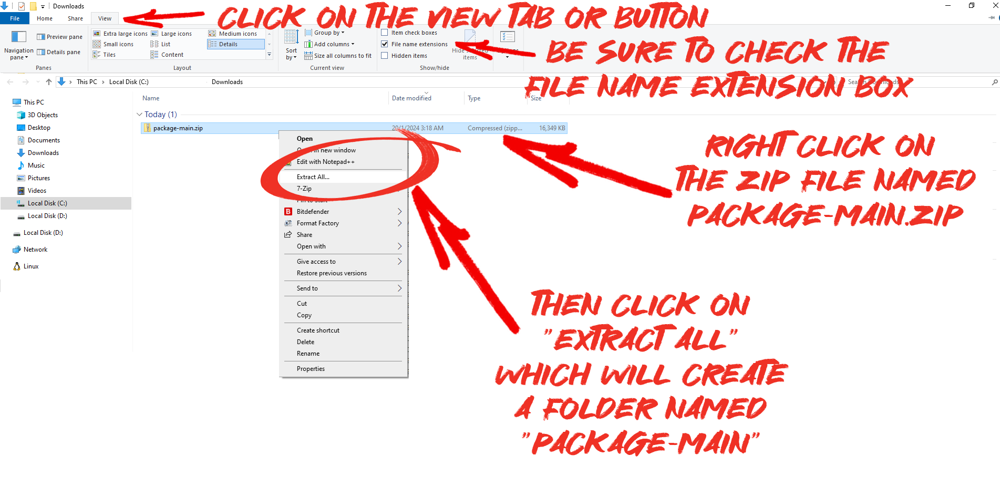
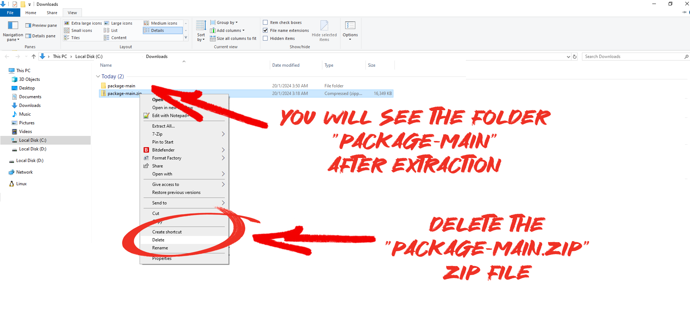
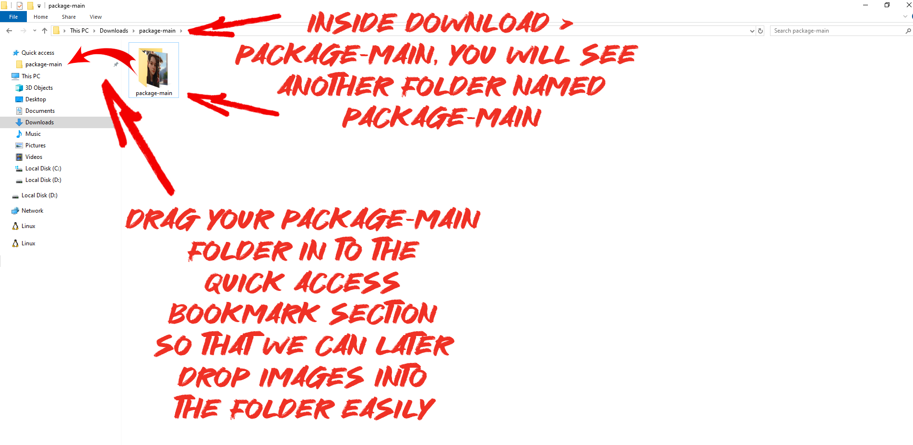
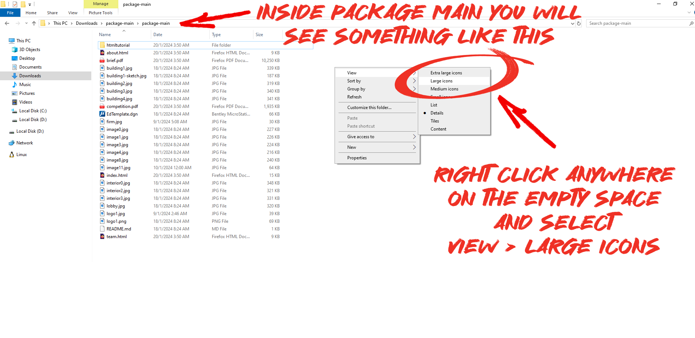
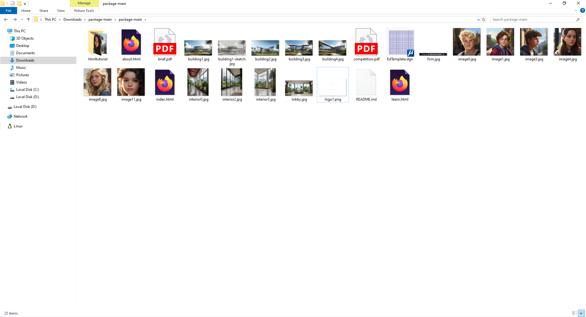
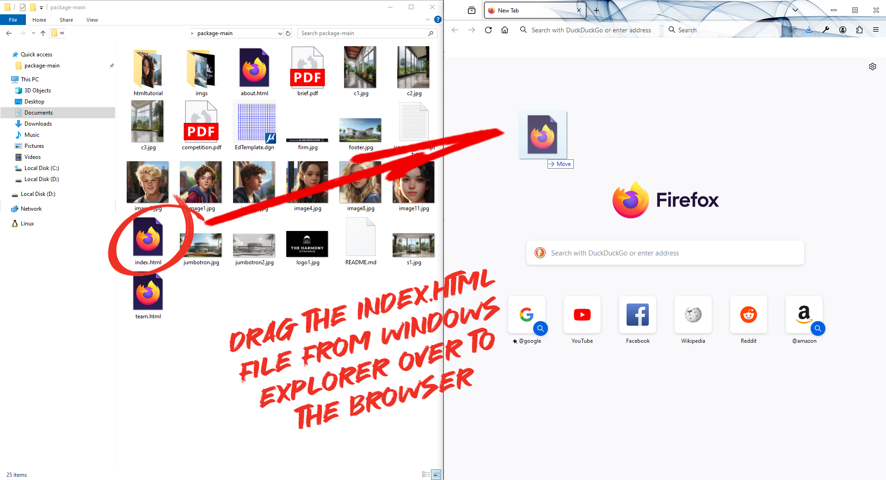
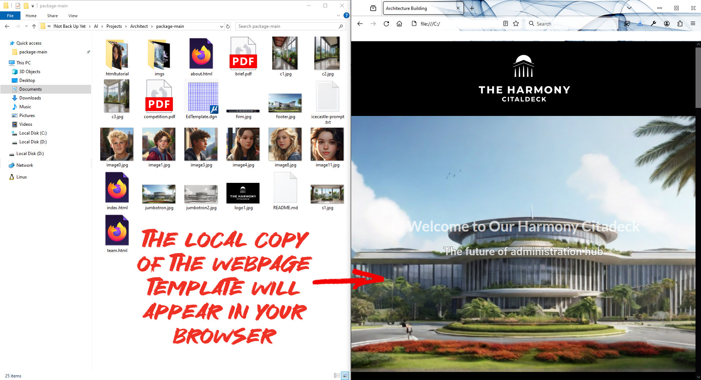

Goto link below to Download Package
 https://github.com/psyblade/packageClick on the Download Button on Your Browser
The above steps will open up the "Download" folder on your window explorer.
Extract Zip File in Your "Download" Window in Explorer
After you have extracted the zip file, you will see the folder named "package-main"
Delete the Zip File
Setup Your Quick Access Bookmark Section
Do this so we can later easily drop images in to your project folder.
Go Into Package-main Folder and Change the View
You Will Now See Large Icons In Your Folder
Now you have a copy of the webpage template like mine on your local computer.
Double-click on the icon "index.html" and it will open this local webpage on the default browser.
You can also open your favorite browser and drag the "index.html" file into the browser to open it.
Open Your Browser Side By Side With Your Windows Explorer
You can do this by dragging your windows explorer all the way to the left end of your screen. This will automatically resize your windows explorer to half the screen.
Open your favorite browser and do the same thing. Drag it to the right end of your screen so that it will automatically resize and align to the right of your screen.
Now drag your "index.html" file into the browser to open it.
You Will See the Local Copy of the Webpage Template Opened in Your Browser
When make any changes to your index.html file, you will have to refresh your browser to see the changes you made.